Objective
The objective of this project was to create a functional website using HTML5 and write in detail how the website was created. The website should also have my contact information as well as my resume.
Below you will find a description of my process making this website.
The objective of this project was to create a functional website using HTML5 and write in detail how the website was created. The website should also have my contact information as well as my resume.
I learned the basics of HTML from lectures on Canvas and the website W3 Schools. Once I understood the basics i read the project description and got started.
Step 2I made an account at github and downloaded the program called Brackets via this link. Brackets is a great and simple program to use to write HTML code and the Live Preview feature is very helpful.
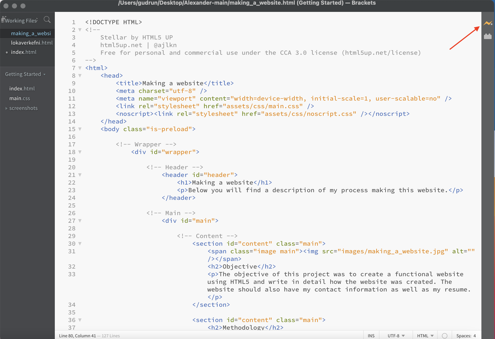
Step 3I found a free open source template at HtmlUp called Stellar. I downloaded the template and saved it to a folder called "Alexander - Main" on my desktop. In this folder i will keep all my html files, images, pdf's and more data for my website. The file called "index.html" is the html file for the home page on the website. I opened the index file with Brackets.
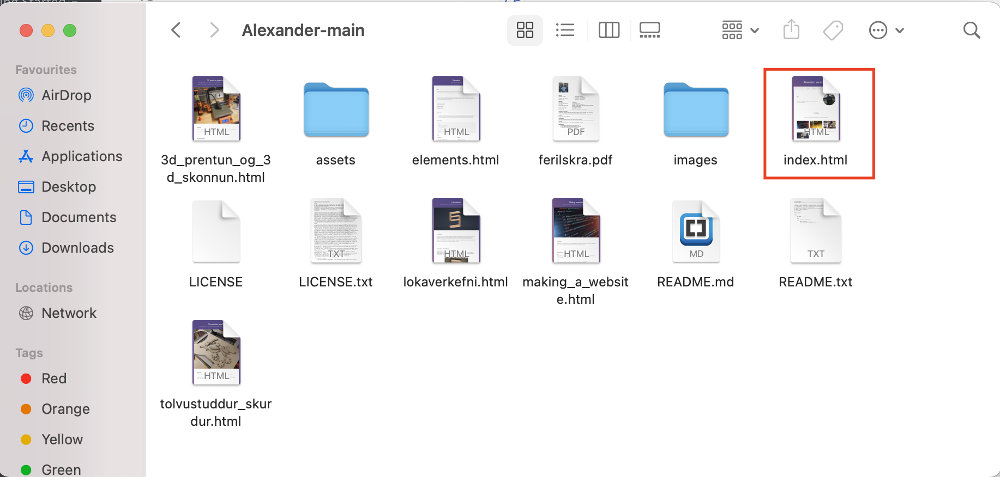
Step 4Finally I began to edit and write code in the Index file to display what I wanted on the home page until I was happy with the results. To make a new section or article dedicated to this project I made a new html file in my website folder called "making_a_website.html" and used the following code shown on the image bellow.
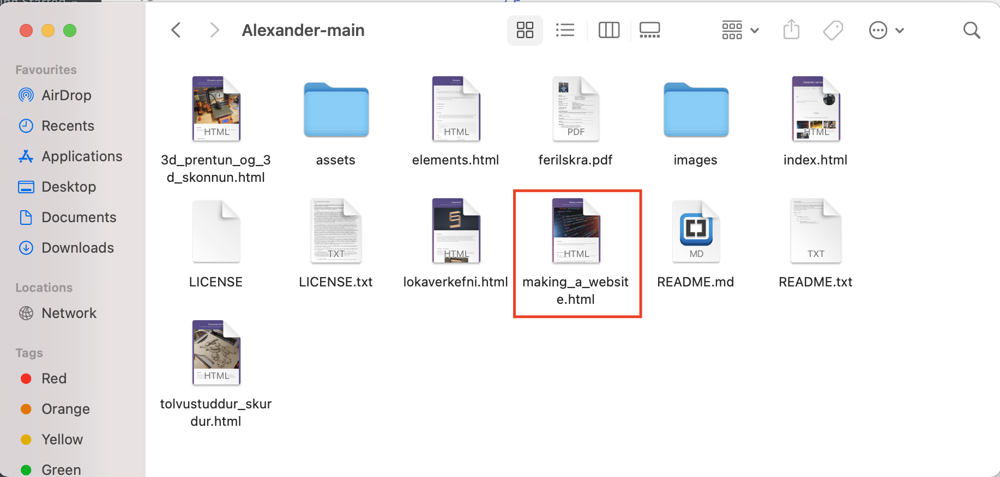
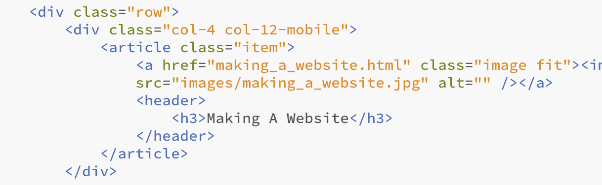
In these lines of code i could add an small image for the article. This was the result:
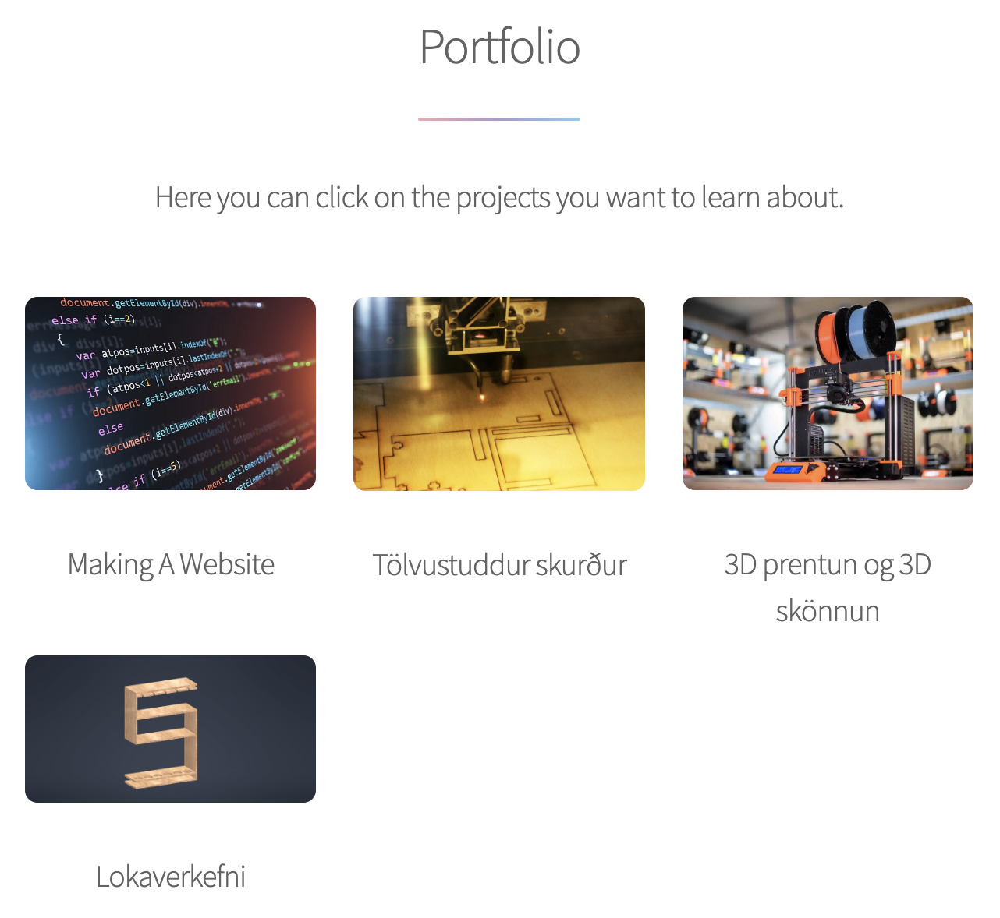
Once my homepage was ready I opened the making_a_webiste.html file in Bracket and started writing the code for the page you are reading now. I didnt really edit the original template much, just filled in the gaps and added images.
Step 5On the github website I created a new repository and uploaded all my files from my website folder. Heres how I did it. (Use this link to see the repository.)
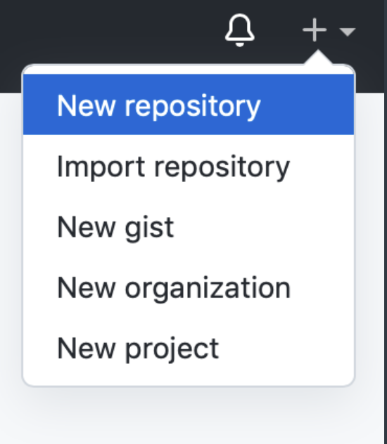
Pro tip:
Make sure to check the box "Add a README file". By doing this you will not need gitbash to upload your files to github like the project description suggests. You simply press "Add file" -> "Upload Files" and drag the files from your website folder and press "Commit changes" and you are done.
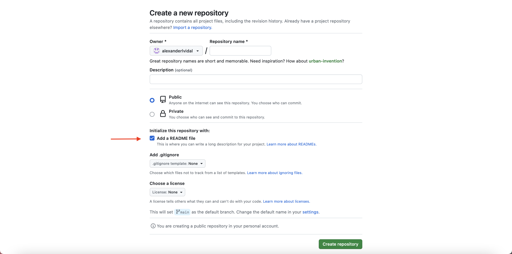
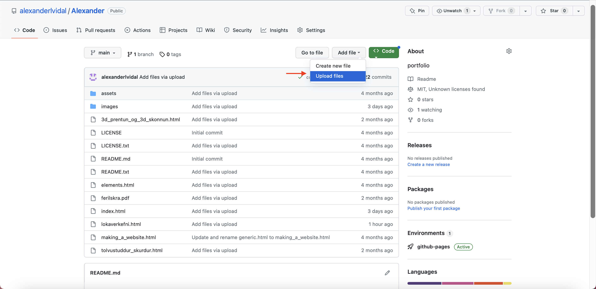
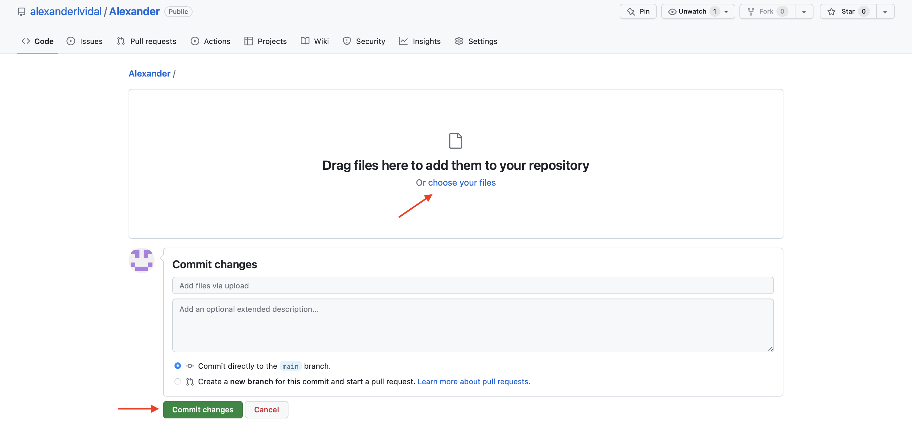
Feel free to download the homepage code to help you get started.
Thankfully I already had a resume ready before this project so I only needed to find a way for the user to access it. I decided to add a button that can be pressed and the resume will be downloaded as a pdf file. I used the following code:
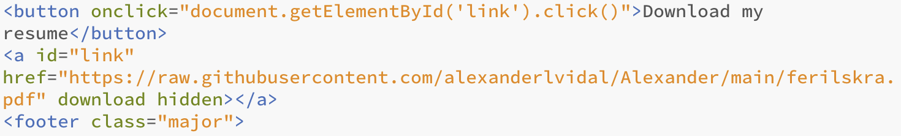
Then I uploaded the pdf to my respository
At first I had problems sizing and centering my images. After few Google searches I found the following code:
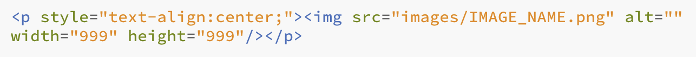
With this code I can insert an image by searching the in the image folder. Here I can select where to position an image and select the size
Number 2 - Adding a home buttonI knew I needed to add a somekind of a button to take the user back to the homepage but I wasn't sure how I could do that. I wanted to have header on top of the page with a little home icon that stays in the same place as you scroll down. After I tried for 1,5 hours to make something work, googling and reading W3 school's webpage, I realized the template I'm using doesn't support that kind of a wrapper. In order to accomplish what I wanted, I needed to reprogram the main.css file and it's really involved to do. My best bet would be changing to a another template. I plan on doing that in the future but the good old back button have to do for now.
github - html5 - W3 school - images in html - icons in html - .css file